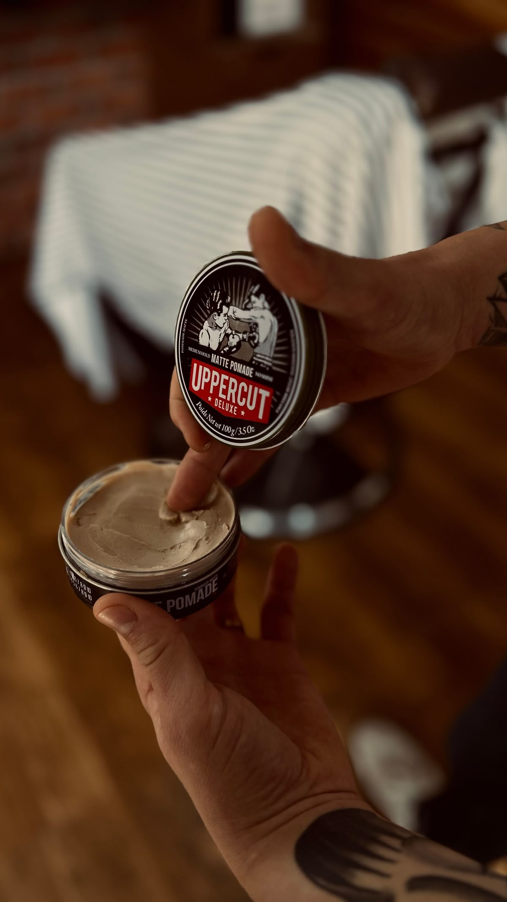
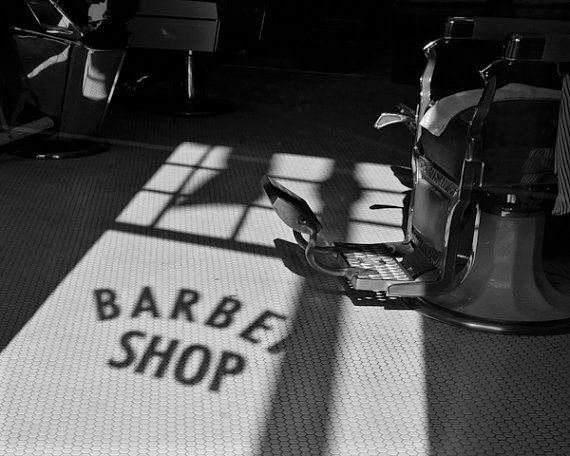

Miért számít az otthoni hajápolás?
A barber szék és a következő időpont között eltelik 2–4 hét. Ez alatt a haj nő, a forma elmosódik, a termékek felhalmozódnak – és ha nem csinálsz semmit, egy héttel a vágás után már látszik, hogy a frizura "leült". Ez nem a hajvágás minőségének kérdése, hanem az otthoni rutinnak.
A jó hír: a férfi hajápolás nem bonyolult. Néhány alapszabály betartása – a megfelelő mosás, a jó termék és a helyes formázás – elegendő ahhoz, hogy a frizura sokkal tovább megőrizze az alakját. Nem kell órákat tölteni vele, csak tudni kell, mit érdemes csinálni.

Hajmosás – mennyire gyakran és hogyan?
Az egyik legelterjedtebb tévhit a férfi hajápolásban az, hogy minden nap meg kell mosni a hajat. A valóság az, hogy a túl gyakori hajmosás kiszárítja a fejbőrt, eltávolítja a természetes olajokat – és ezek az olajok éppen azok, amelyek egészségesen tartják a hajat.
A legtöbb férfi számára heti 2–3 alkalom az ideális. Rövid, zsírosodásra hajlamos haj esetén esetleg több, száraz vagy hosszabb haj esetén kevesebb. A kulcs az, hogy a saját hajtípusodhoz igazítsd – nem egy általános szabályhoz.
- Normál haj: heti 2–3 mosás elegendő
- Zsíros haj: heti 3–4 alkalom, de enyhe, kímélő samponnal
- Száraz vagy göndör haj: heti 1–2 alkalom, hidratáló samponnal
- Fade hajvágás után: a rövid oldalakat könnyebb fenntartani, a tetőrészt ugyanúgy kell mosni

Melyik terméket használd hajformázáshoz?
A hajformázó termék megválasztása az egyik leggyakoribb kérdés. Wax, pomádé, hajkrém, agyag, por – mindegyiknek más az állaga, más a tartása és más a fénye. Nem mindegy, melyiket választod.
Wax
Közepes tartás, természetes fény. Rövid és közepes hosszú hajhoz ideális. Könnyen formázható, de vízzáró változatnál nehezebb kimosni. Textured crop és casual stílusokhoz jól működik.
Pomádé
Erős tartás, magasabb fény. Klasszikus, visszafésült stílusokhoz – pompadour, slicked back. Vizes bázisú változat könnyen kimosható, olajos bázisú tartósabb, de nehezebb eltávolítani.
Hajagyag (clay)
Erős tartás, matt felület. Az egyik legjobb választás modern, texturált stílusokhoz. Vastagabbá teszi a hajat, ezért ritka haj esetén is hasznos. Könnyen kimosható.
Hajpor
Volumennövelő, matt hatás. Rövid és közepes hajhoz – beledörzsölve azonnal vastagabb hatást kelt. Kiválóan használható más termékek mellé az extra tartásért.
Az arany szabály: kevesebb termékkel kezdj, és szükség szerint adj hozzá. A túl sok termék nehezíti a hajat és maszatos hatást kelt. Mindig száraz vagy enyhén nedves hajra vidd fel – nedves hajra a legtöbb termék nem tapad rendesen.
Mire figyelj a saját hajtípusodnál?
Az általános tippek mellett érdemes a saját hajtípusodra szabni az ápolási rutint. Más kihívásai vannak a rövid hajnak, a fade hajvágásnak és a hosszabb hajnak.
- Rövid haj: könnyen kezelhető, de gyorsan nő ki – 2–3 hetente érdemes frissíttetni. Kevés termék elegendő, a haj természetesen tartja a formáját
- Fade hajvágás: az átmenet gyorsan elmosódik, ezért 2 hetente ajánlott visszamenni. Otthon csak a tetőrészt kell formázni – az oldalak nem igényelnek terméket
- Hosszabb haj: több ápolást igényel. Hidratáló sampon és kondicionáló ajánlott, formázáshoz könnyebb, hajolaj típusú termékek a legjobbak
- Göndör haj: ne dörzsöld törülközővel – inkább nyomd ki belőle a vizet. Göndörítő krém vagy könnyű hajkrém segít a fürtök alakján
Mikor menj vissza a barberhez?
Az otthoni ápolás fenntartja a formát, de nem pótolhatja a profi karbantartást. Általános iránymutatóként:
- Skin fade, high fade: 2–3 hét – az átmenet gyorsan elmosódik
- Mid fade, rövid haj: 3–4 hét
- Hosszabb haj, lazább stílus: 4–6 hét
A legjobb jelzés az, amikor magad is érzed, hogy a frizura "leült" – az arányok megváltoztak, az átmenet elmosódott, vagy a tetőrész már nem úgy áll, ahogy kellene. Ennél a pontnál érdemes időpontot foglalni.
Frissítsd a frizurádat a Bosphorus barber shopban
Az otthoni ápolás sokat meghatároz – de amikor a forma visszaállítása szükséges, a Bosphorus barber shop profi kezei elvégzik a munkát. Foglalj most, és tartsd mindig a legjobb formádat.